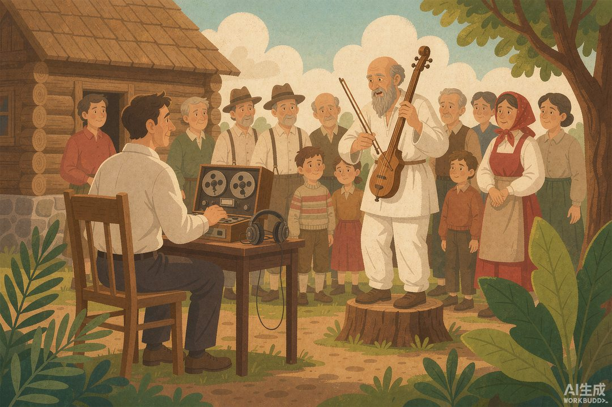

|
信息传播那些事儿 · 卷一 信息的黎明 · 第09篇 |
|
荷马与游吟诗人：没文字，史诗怎么传千年？ —— 没有文字的时代，谁在替人类保存史诗？ |
|
上一回我们说，商王把话刻在乌龟壳和牛骨头上，发给老天爷，还求回复。甲骨文干了一件大事：第一次把"会飘走的话"钉死在硬物上。可问题来了——在另一个文明里，压根还没发明这套"钉死术"，他们靠什么，把一部几十万字的史诗，传了上千年？ |
答案是四个字：人肉硬盘。
不是比喻。是真有这么一群人，把整部"书"装在自己脑子里，走到哪儿唱到哪儿，唱了一代又一代。今天这篇，我们就说说这群人——和那个传说中瞎了眼的"超级硬盘"，荷马。
一 | 一个瞎子，和一部"不存在"的书 |
先上两个吓人的数字。
《伊利亚特》大约 15693 行，《奥德赛》大约 12110 行，两部加起来近 28000 行诗。古希腊人用的是"六音步扬抑格"——一种念起来像波浪一样有节奏的长短长短句式。你随便翻开一页荷马，满满当当全是这种诗。
可诡异的地方在这儿：这部"书"，在很长很长一段时间里，根本不存在实体。
我们从小被教育：书嘛，写在纸上、印在册上。但荷马活着的年代（大致推算在公元前 9 到 8 世纪），希腊人还没学会用文字去"记录"这么长的东西。字母是有了，可你让一个诗人当场把两万八千行诗默写下来？不现实。
所以真相很可能是：荷马压根不是"写"出来的，是"唱"出来的。而那个叫"荷马"的人，大概也不是一个具体的作者，而是一顶帽子——好几代、好多位盲眼歌手，共用着同一个名字。
▲ 月光下吟唱的盲诗人（AI 生成示意图）
二 | 没有纸笔，怎么传？ |
在文字还没接管长叙事的年代，希腊的信息生产，靠的是一群叫 aoidos（游吟诗人） 的人。
他们背着一把竖琴，从这个城邦逛到那个城邦，在贵族的宴席上献艺。主人管饭管酒，他们管"来一段特洛伊战争"。一场饭吃下来，几小时的故事就唱完了。听众 ears 一竖，脑子一记，下次自己也能跟邻居吹一段。
这套机制，你可以把它理解成前印刷时代的"内容分发网络"——只不过节点不是服务器，是一个个会走的活人；带宽不是光纤，是嘴。
而每一位游吟诗人，就是一块人肉硬盘。整部史诗，存在他的记忆里；他走到哪儿，数据就带到哪儿；他唱给谁听，谁就获得了一份"拷贝"——当然，是一份会被悄悄改写的拷贝。
三 | 人肉硬盘的"压缩算法"：程式 |
你肯定要问：两万八千行，脑子装得下？就算装得下，每次都一字不差地背，谁受得了？
答案是：他们根本不"背"。他们"组装"。
这事直到 20 世纪才被彻底揭开。1930 年代，一位叫米尔曼·帕里（Milman Parry）的学者跑到南斯拉夫乡下，去录当地还在唱史诗的民间歌手。他和学生阿尔伯特·洛德（Albert Lord）后来写出一套理论，叫"口头程式理论"（Oral-Formulaic Theory）——直接把"荷马怎么干活"的谜底给端了出来。
核心发现特别聪明：游吟诗人不是背整首诗，而是背一堆"预制件"（formula，程式）。
举个最经典的例子——荷马里，阿喀琉斯永远叫"捷足的阿喀琉斯"，雅典娜永远叫"明眸的雅典娜"，大海永远叫"酒色的大海"。这不是修辞癖好，这是记忆外挂：固定的"形容词+人名"组合，刚好填满一个音步，押韵、顺口、不费脑。诗人临场要夸谁、要提到哪，直接从词库里抓一个现成的套上去就行。
这就像今天写代码用函数库、写稿子用模板——不是从零写，是拼装。所以一位好诗人，真正的本事不是"记性好"，而是"现场组合能力强"。
▲ 宴席上的游吟诗人（AI 生成示意图）
|
数字锚点 · 人肉硬盘的产能到底有多大 | |||||||
帕里-洛德 1933–1935 年南斯拉夫田野调查：活生生的"口头程式"传统，证明荷马式史诗靠预制件现场组装，而非死记硬背。 |
四 | 口述，反而比手抄更"抗造"？ |
你可能会觉得：口耳相传，多不靠谱啊，风一吹就走样了。
但换个角度想，它有个手抄本永远比不了的优点——冗余。
手抄本要是抄错一个字，后面重抄的人照着错本再抄，错就一路传下去，越错越离谱，而且没人知道原版长啥样。可口述不一样：同一个故事，一百个诗人有一百种唱法，主干情节被成千上万次重复，反而被"焊"得死死的。
更妙的是它的容错机制：诗人台上忘词了？没事，当场编一段补上。听众在乎的是"今天这顿饭听得爽不爽"，没人拿个"原版"对着挑刺。所以口述传统不是一条脆绳，而是一张有弹性的网——个别节点断了，整体还在。

▲ 20 世纪学者用录音机"抢救"口头传统（AI 生成示意图）
五 | "作者"这个词，当时还没出生 |
说到这儿，本篇真正想点题的东西出来了。
在文字普及之前，信息是谁在生产？
不是某个署名的"作家"，而是一群流动的、匿名的、集体的人。没有版权，没有稿费，没有"原创声明"。一首史诗，是几百代歌手一起"联机创作"的结果——你改一句，我加一段，传到荷马这儿，已经是个巨大的、活着的共同作品。
所以你看，人类信息生产的第一个形态，是"会走的嘴"和"会唱的脑子"。在印刷术出现之前，一个文明的信息产能上限，差不多就等于"最会讲的那个人的记忆容量"。谁记得多、唱得溜，谁就掌握了内容。部落里那个最爱讲故事的老头，就是当时的"总编辑"。
但别急着鼓掌。这套"人肉硬盘"系统有个绕不开的毛病：它每唱一遍，都在偷偷改一点。
没有副本，就没有校验；没有原版，就没有"对错"。一个普通曾祖父，传了三代，可能就被唱成了威风凛凛的大英雄。这毛病有多大？下一篇，我们专门来算这笔"失真账"。
|
下篇预告 · 第10篇《口述史的可怕误差》——人肉硬盘能传千年，可它每唱一遍都偷偷改一点。传三代，曾祖父就变成大英雄了。下一篇算算，这套"没有副本、无法校验"的系统，误差到底能大到什么程度。 |
|
本篇史实与数据转引自米尔曼·帕里、阿尔伯特·洛德《歌手之歌》及"口头程式理论"相关公开研究；配图为 AI 生成示意图。 |